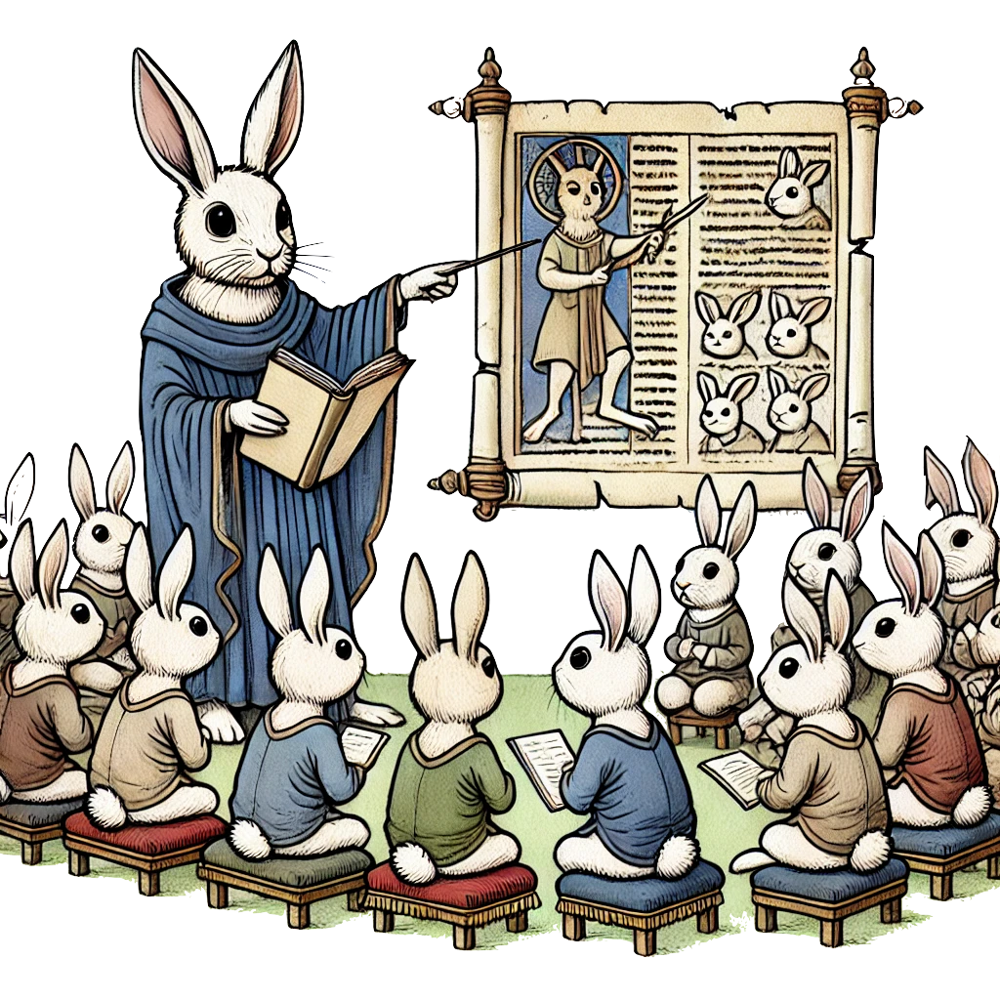
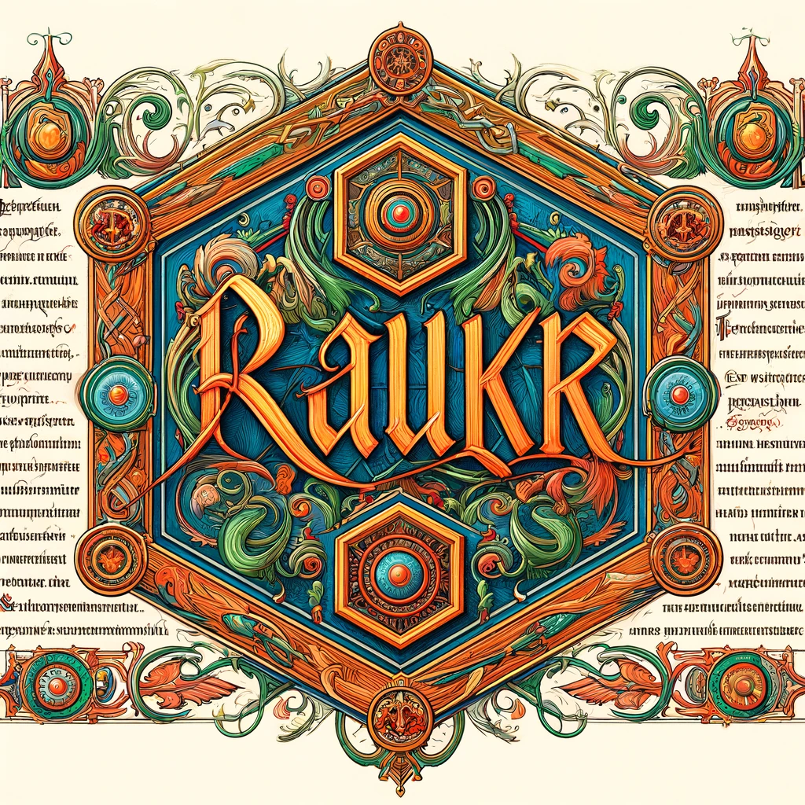
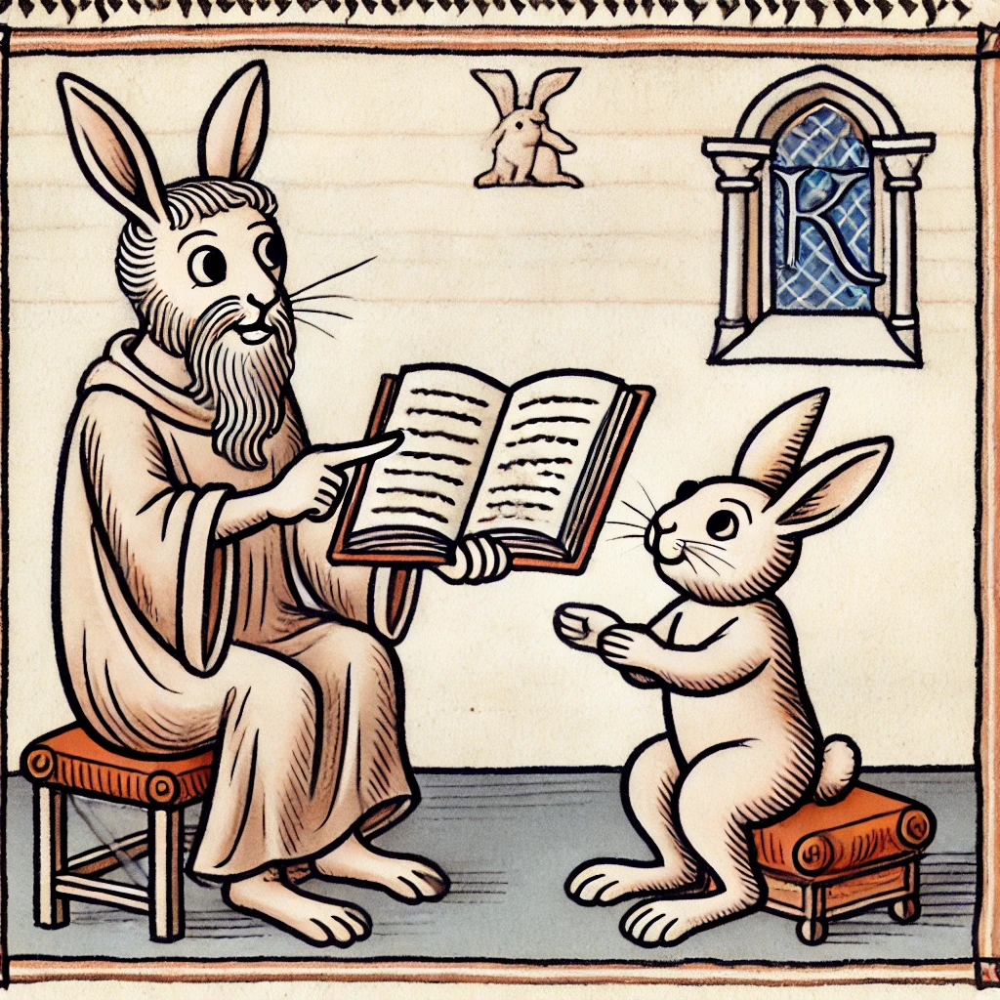

Teachings
|  |  |
Non scholae sed vitae discimus.
Courses as teacher / TA
Bioinformatics 3MR103 (undergraduate level). Module on machine learning. 2023.
Neural Networks and Deep Learning. Module: From autoencoders to beta-Variational Autoencoders. 2022, 2023.
Application Oriented Deep Learning in Physics. 1FA386. Guest lectures/labs on autoencoders and convolutional neural networks. 2021,
R programming for Life Scientists. A SciLife Lab course. 2015 (1x), 2016 (2x), 2017 (2x).
Statistical Methods in Genetic Mapping: An R-based Course. A 4 ETCS graduate-level course. Nov-Dec 2013.
Boolean Reasoning (lectures and labs on random forests)
Knowledge-based Systems in Bioinformatics
Thesis Advisor
Masters thesis: Moa Qvarnlöv. The accuracy, reliability and practicality of AI systems in analyzing and interpreting medical images for improved patient diagnosis and treatment.(subject reader, thesis defended 2024)
Masters thesis: Yasemin Utkueri. Enhancing cDNA Basecalls for Non-Model Organisms Using Custom Nanopore Models: A Case Study on Krill.(subject reader, thesis defended 2024)
PhD thesis: Sharadha Sakthikumar Characterizing the spectrum of somatic alterations in canine and human cancers. (co-advisor, thesis defended 2020)
PhD thesis: Simon Forsberg. Complex Trait Genetics: Beyond Additivity. (co-advisor, thesis defended 2016)
PhD thesis: Muhammad Ahsan. Identification and evaluation of functional sequences, selective sweeps and candidate mutations within QTL regions regulating growth in chicken. (co-advisor, thesis defended in 2014)
Masters thesis: Małgorzata Kauczynska. Random Forest-based classifiers for prediction of SLE risk from SNP microarray data. (co-advisor, defended 2006)
Research project: Oskar Gauffin, analysis of time-spatial data on microbehavior in the domestic dog. 2015 (advisor)
Research project (within the ERASMUS European project): Jagoda Jabłońska. Development and application of novel tools for enhanced genome-wide association studies. Published in Bioinformatics, 2015, 2016
Research project: Andreas E. Lundberg. A tool for assembly and SNP detection using data coming from different SOLiD sequencing setups (advisor)
Research project: Simon Forsberg. An R package for assessment of mutation impact on protein function (advisor)
Research project: Samuel Lampa. PTMatcher, a web-based tool for predicting post-translational modifications in proteins
Thesis Committee
PhD Committee member: Rickard Hamarén. From the migrations of herders and farmers to the colonial era and the modern-day: Genetic inferences on African demographic history (thesis defended 2022)
PhD Committee member: Martin Dahlö. Approaches for Distributing Large Scale Bioinformatic Analyses (thesis defended in 2021)
PhD Committee member: Andrea Garcia Montaner. Genome evolution of a bee-associated bacterium (thesis defended in 2020)
Licenciate opponent: Kristina Ausmees. Efficient computational methods for applications in genomics (thesis opponent, defended 2019)
